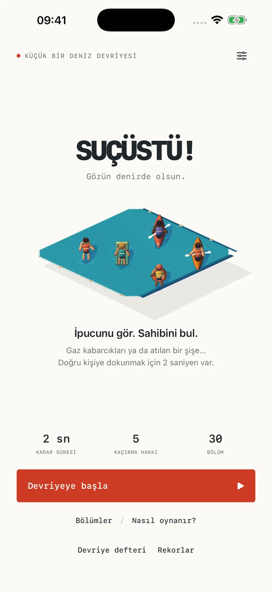
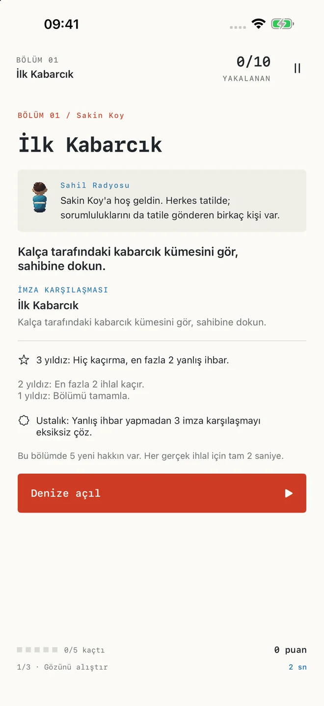
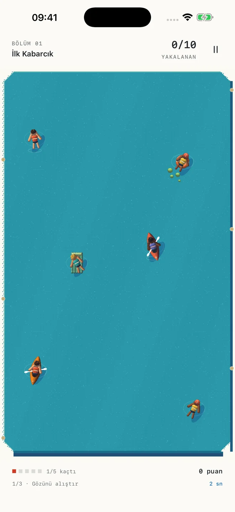

OYUN · iPHONE
SUÇÜSTÜ!
Deniz Devriyesi · Denizde dikkat oyunu
Kabarcığı gör, çöpü atanı bul. Kalabalık bir koyda yüzücüler ve kayıklar hareket ederken neyin masum, neyin gerçek ihlal olduğunu ayırt et; gaz kabarcıklarının ya da suya atılan çöpün sahibine iki saniye içinde dokun.
Şu an TestFlight'ta test ediliyor. App Store yayını hazırlanıyor; yayımlandığında indirme bağlantısı burada olacak.
01 · NASIL OYNANIR
İki saniye, tek dokunuş
GERÇEK İPUCUNU YAKALA
Gaz kabarcıklarının kaynağını izle ya da çöpü kimin attığını bul. Nefes kabarcıkları, oyuncaklar, kürek köpüğü ve eski atıklar dikkatini dağıtmaya çalışır.
DİKKATLİ OL, ACELECİ OLMA
Beş gerçek ihlal kaçarsa bölüm biter. Masum birine dokunmak puanını düşürür ve kısa bir kilit getirir; boş suya dokunmak cezasızdır.
NEYİ KAÇIRDIM?
Kaçırdığın anı sonuç ekranında yeniden izle: durdur, ileri geri sar, yarım hızda bak, ilk kanıta atla.
SAHİLİ GELİŞTİR
Bölümleri ilk kez bitirdikçe sahil gelişir, kozmetik setler açılır. Kozmetikler oyun avantajı vermez.
GÜNLÜK VE SONSUZ DEVRİYE
10. bölümden sonra herkesin aynı parkuru oynadığı 60 saniyelik günlük devriye, 30. bölümden sonra sonsuz devriye açılır.
HERKES İÇİN
Sessizde de oynanır. Efektler, titreşim, hareket ve kontrast ayarlardan düzenlenebilir.
02 · ALTI KOY
Sakin Koy'dan Son Devriye'ye
- 1–5Sakin Koy
- 6–10Kalabalık Plaj
- 11–15Akıntılı Deniz
- 16–20Tekne Şenliği
- 21–25Mavi Labirent
- 26–30Son Devriye
03 · EKRANLAR
Oyundan kareler



04 · YAPIM NOTLARI
Nasıl yapıldı?
Swift 6, SwiftUI ve SpriteKit ile yazılmış dikey bir iPhone oyunu. Otuz bölüm tek bir JSON dosyasından yükleniyor; bir "adalet filtresi" her gerçek ihlalin görünür bir kanıtla başlamasını ve ekranda kalmasını garanti ediyor. Zorluk iki saniyeyi kısaltarak değil; kalabalık, yön değişimi, masum hareketler ve eşzamanlı olaylarla artıyor. Sesler kayıt değil, programla üretiliyor.
Oyuncak görünümlü yüzücülerin ışık ve gölge yaklaşımı, MIT lisanslı Pixel Plays kaynaklarından uyarlandı. Geliştirici: Ali Emre Büyükkol.
05 · DESTEK
Yardım ve gizlilik
İlerlemen, ayarların ve yerel rekorların cihazında kalır, geliştiriciye gönderilmez. Game Center'ı kullanmayı seçersen skorların Apple ile paylaşılır.